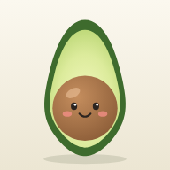

Menús sanos para peques a partir del menú del cole.
Añade platos que a vuestra hija le gusten o que os parezcan un buen ejemplo. El menú los usará como inspiración de sabores y texturas, y adaptará lo que haga falta para cumplir las reglas.
Foddy usa Claude Sonnet 5.5 a través de tu propia clave de API de Anthropic. La clave se guarda solo en este dispositivo y solo se envía a Anthropic.
Es la cifra que habéis fijado vosotros. No está contrastada con una fuente oficial: conviene confirmarla con el pediatra.
Lácteos, huevo y embutidos cuentan como proteína animal. Si lo dejas vacío se cuenta como 0 y el total real será mayor.
Guarda tus ajustes, platos modelo y último menú en un texto que puedes pegar en una nota. No incluye la clave de API.
Las cantidades de proteína son estimaciones, sobre todo las del colegio, cuyas raciones no se conocen. Foddy ayuda a planificar y no sustituye el criterio del pediatra. Al generar un menú, los datos que has introducido se envían a la API de Anthropic.